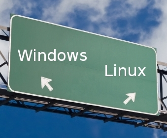
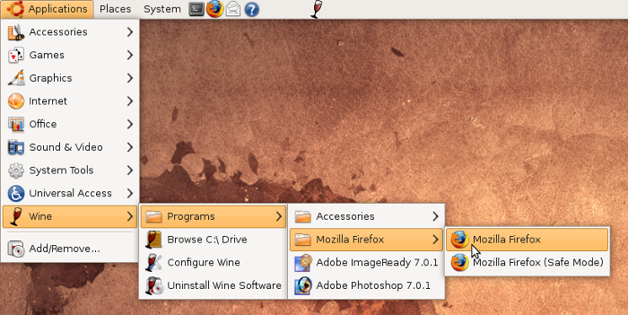
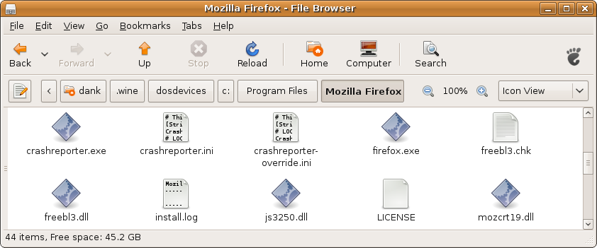
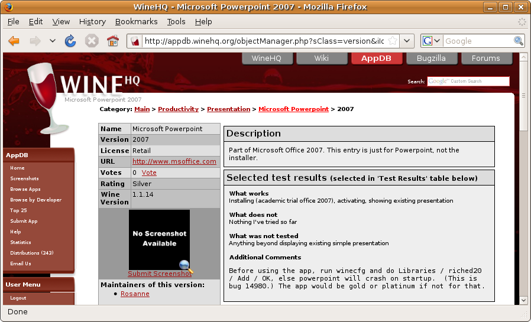
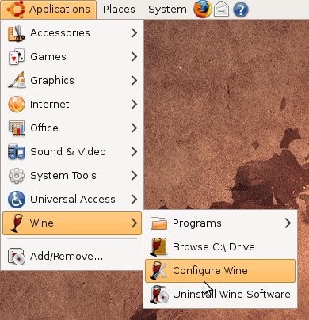
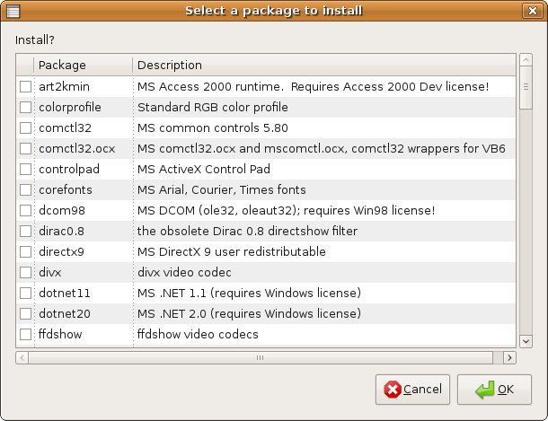
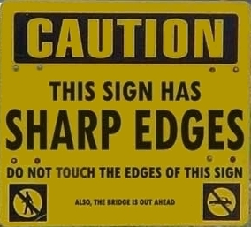
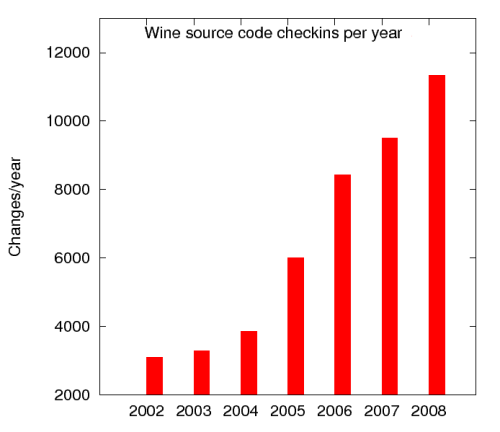

Wine
or
Leaving Windows Behind? Bring your apps with you!
Dan Kegel
Cebit 2009
www.kegel.com/cebit
DRAFT
Click on each image to find out more
The opinions expressed in this talk are my own, and not those of my employer
Pay attention, there will be a quiz at the end
The world is changing...
Linux is spreading beyond servers

The world fell in love with Windows in 1995
CTV: "Millions of computer buffs swarmed into stores..."

But now HP uses Ubuntu Linux
on the $280
Mini Mi netbook

and Dell uses Ubuntu Linux on the $250
Mini 9n netbook

Why did Dell and HP choose Linux?
Isn't that geeky and hard to use?

Vista doesn't fit on netbooks

Windows costs netbook vendors $20-$50 per unit
which hurts their bottom line
Microsoft restricts the use of Windows on netbooks:
Microsoft limits Windows netbooks to
1GB RAM, 1GHz CPU
10.2" Screen, no DirectX 10
to protect sales of more expensive computers


Windows-only websites used to be common,
but Firefox and Webkit are making that rare

Linux now easy to use
thanks to vendors like Ubuntu

Linux now comes with a capable free office suite

But why should you try Linux?

Linux comes with tens of thousands of free applications
and free updates
You're free to install Linux
wherever and whenever you like

You're even encouraged to share Linux with your friends
Any programmer in the world can fix or improve Linux

Linux upgrades never forced
New versions of Ubuntu are always free

Linux has only 1% to 2% as many viruses as Windows (netlux.org)


Munich, Niedersachsen, France, Spain,
China, Russia, Brazil
are using desktop Linux
Reasons: flexibility, independence, cost
Running Windows Apps... without Windows?

OK, I'm convinced, I should try Linux.
But there's just one more thing:


I have this one app, can I take it with me?


Sure, you could run those apps in virtual Windows sessions with VMWare...

... but then you're not saving any money. And it's slower, too.
Why can't Linux just run Windows apps?

Linux cloned Unix
Can't we clone Windows, too?

As it turns out, yes.
Wine is a free implementation of the Windows APIs
It can run thousands of Windows applications, including
Microsoft Office and Adobe Photoshop... and vital apps
like
World of Warcraft and even
VeggieTales Dance Dance Dance

Wine Is Not an Emulator
It's a catalyst
Wine makes it easier to switch operating systems

You can install Wine in Ubuntu Linux with "Add/Remove Applications"

If you need the latest test version, you can download it from WineHQ.org

The Wine App Database rates
app compatibility on a scale from Garbage to Platinum

Firefox is listed as Platinum
so it should work well

To install Windows Firefox, just double-click on its installer

After installing Firefox, it shows up in the user's menus under Wine

Wine stores your "C: drive" in your home directory under .wine/dosdevices/c:

Powerpoint 2007 is listed as Silver
because you have to use Winecfg to work around a bug


Six mouse clicks and one word later, Powerpoint is happy

Safari 3.2 is listed as Bronze
because https and bookmarks don't work
and you have to install a font to use it

Winetricks makes it easy to safely grab missing fonts or DLLs

Hang on, did you say Wine is free?
It's not like elves are doing the work; programmers have to eat, don't they?
If Wine is so good, why give it away for free?

Because doing it as a community project makes it easier for everybody to help
Together, sufficiently motivated users can move mountains

The Wine team is dozens of volunteers
plus a few paid fulltimers
Who should not use Wine?
If
you need dozens of Windows apps to all work perfectly
and
you don't want to help track down problems (or pay for support)
then
you might be better off using real Windows in a virtual machine

Things That Don't Work Yet
WPF / XAML
Some copy protection schemes
Some USB drivers (e.g. iPhone sync)
Win64 support
Direct3D 10
Who uses Wine? Should I?
If
all the apps you need are known to work with Wine
or
you are willing to pay for support and/or help track down problems
then
Wine might be a good fit for you
First, though, consider replacing Windows apps:


with Linux or Web apps:


because then you have fewer people to blame if something goes wrong

The Czech law firm Kindl & Partners runs Firefox, OpenOffice and Linux on ten computers
They use Wine to run ASPI,
a standard Czech legal software package

Xavier School in Manilla has 600 computers
Sticking with Windows would have cost them $50,000 + $25,000 annually
So in 2007, they migrated to Linux
"We are quite comfortable with Open Office as a replacement for MS Office.
Email is provided by Lotus Notes or webmail on Firefox.
We are using Wine every day in high school for
WinPlot,
and every week in grade school for custom Chinese programs (written in VB6).
The City of Munich has 14,000 workstations.
All run Firefox; about 8,000 run OpenOffice, and 1200 run Linux.
250 workstations use Wine to run Geoinfo, WS-FTP, and a legal reference book.
LiMux is no technical project,
but a change management project, dealing with the fears and emotions
of people.
Tips for a successful Linux migration
0. Keep it simple
1. Find willing volunteers
2. Switch to open source or web apps (e.g. Firefox) on Windows
3. Then switch just people that need no Windows apps to Linux
4. Let people that need lots of Windows apps keep using Windows
5. Find people that need just a few Windows apps,
test with Wine, file bugs, and get help

Where to get help when things go wrong:
Free web resources (FAQ, wiki, forums, Bugzilla, etc.)
Inexpensive Commercial support (Codeweavers, Canonical)
Heavy-duty Wine development (Codeweavers consulting)
If you just need a little help, support is cheap...
but implementing missing features can get expensive.

Codeweavers plows most of the revenue from their support offerings into
salaries for fulltime Wine developers

Canonical is the company behind Ubuntu, the most popular desktop Linux.
Both Codeweavers and Canonical are fanatically devoted to supporting free software.

Wine development is guided by our conformance test suite
Each change to Wine must pass tens of thousands of tests flawlessly

We fix about 150 reported bugs every month
Most are small bug fixes or very small missing features
For each one, we try to add a new conformance test

Wine is under increasingly active development

You say Wine runs Windows apps without Windows?
Doesn't that violate Microsoft's copyright or something?

Clean room design techniques are used to ensure Wine is legal
and free of copyright violations
Q U I Z
If ohloh.net says Wine cost about 21 million euros to develop so far,
and Wine has 5000 open bugs, costing about 10 million euros to fix,
and the EU has fined Microsoft 1.7 billion euros so far,
1. Can you think of an effective way for the EU to encourage competition in the operating system market?
2. How much would each of CeBIT's half-million visitors have to contribute to fix all known Wine bugs?
Financial contributions to the Wine project may be made via the
Software Freedom Conservancy
but we prefer patches :-)

Let's take Wine for a test drive!

Questions?
Penguin happy because he drank a lot of Wine
Clickable presentation online at
www.kegel.com/cebit
Text copyright 2009, Dan Kegel
Bar charts drawn with gnuplot (thanks, Tom!)
Images trademarked and copyrighted by their respective trademark
and copyright holders, and used here under the
fair use doctrine.
The opinions expressed in this talk are my own, and not those of my employer